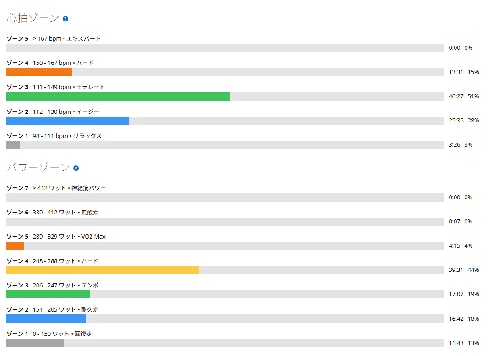
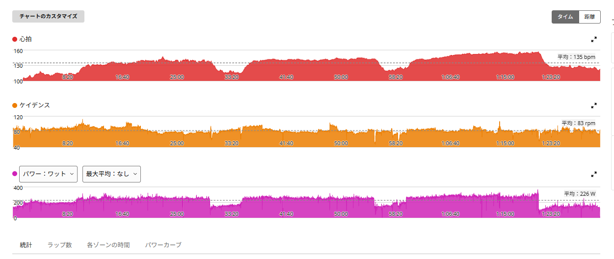

同じ250Wでも心拍が低い。今日はかなり調子が良かった
今日はローラーでSST20分×3本。最近は、同じくらいの出力でも心拍がかなり低い日があったり、逆にしっかり上がる日があったりして、心拍の動きを少し気にしている。
そんな中、今日はかなり調子が良い日だった。

1時間29分・NP239W・TSS112.5
- 全体47.56km / 1時間29分30秒 / 平均226W / NP239W / IF0.871 / TSS112.5 / 平均気温26.5℃
- 心拍・回転平均135bpm / 最大157bpm / 平均83rpm
- 効果有酸素TE3.3 / 無酸素TE0.0 / 運動負荷114
パワーはゾーン4に39分31秒。心拍はゾーン3に46分27秒、ゾーン4に13分31秒で、ゾーン5はゼロ。
250W → 252W → 273W。3本とも完遂
- 1本目20分01秒 / 250W / 心拍平均136bpm・最大148bpm
- 2本目20分01秒 / 252W / 心拍平均140bpm・最大145bpm
- 3本目20分02秒 / 273W / 心拍平均149bpm・最大157bpm
3本とも完遂。しかも3本目は273W。FTP設定が275Wなので、ほぼFTPそのものを20分維持できた。

1本目と2本目の心拍がかなり低い
今日いちばん気になったのはここ。1本目250Wで平均心拍136bpm、2本目252Wで140bpm。以前のSSTと並べると、こうなる。
- 9月7日250W・144bpm / 247W・148bpm / 252W・152bpm
- 9月11日252W・140bpm / 253W・149bpm / 260W・152bpm
- 今日250W・136bpm / 252W・140bpm / 273W・149bpm
もちろん毎回条件は違うが、今日は同じ250W前後でも心拍がかなり低め。1本目は9月7日と同じ250Wで8bpm低く、2本目は9月11日とほぼ同じ出力で9bpm低い。
それでいて、「心拍が上がらなくて変な感じ」ではなかった。むしろ今日はかなり調子が良くて、余裕を持って回せている感覚。なので今日の低心拍は、「出力は出ているのに身体への負担感は小さい」という、かなり良い方向の低さに感じた。
3本目は273Wまで上げられた
1本目、2本目で余裕があったので、3本目は少し上げた。結果は273W。20分×3の3本目としては、9月11日の260Wを13W上回ってこれまでで一番高い。しかもSSTを40分やった後である。
以前なら3本目は「なんとか完遂する」という感覚だったが、今日は最後にここまで上げられた。最近はメニュー途中で気持ちが切れる日もあったが、今日は逆。最後までしっかりやれた。
9月17日の低心拍とは、何が違ったのか
心拍が低かった日は、9月17日にもあった。258Wで最大心拍143bpm。ただ、あの日は2本と6分で気持ちが切れて終わっている。
心拍が低いという点だけ見れば、どちらも同じ。違うのはその後で、今日は余裕があって3本目で出力を上げられた。心拍の数字だけでは、良し悪しは決まらないということだと思う。
天気が良かったのも関係ある？
今日は天気が良く、「気圧が高いから調子が良かったのかもしれない」とも感じた。高気圧だから直接パフォーマンスが上がる、とまでは断定できない。
ただ、自分は季節の変わり目や天候で気分の上下が出やすい感覚がある。なので、天気・気圧・気分・睡眠・心拍。このあたりを今後少しメモしておくと、自分の調子のパターンが見えてくるかもしれない。
心拍の見方も少し変わってきた
少し前までは「心拍が低い＝疲労？」と心配していた。でも最近の外ライドでは最大心拍160台まで普通に上がっている。今日も3本目を273Wまで上げれば、平均149bpm・最大157bpmまで自然に上昇した。つまり「心拍が上がらなくなっている」わけではなさそうだ。
今日みたいに、同じ出力で心拍が低い、でも余裕がある、さらに高い出力まで上げられる。この流れなら、かなり良い状態と見てよさそうである。
今日やってみて思ったこと
今日はかなり調子が良かった。1本目250W、2本目252W。この時点で心拍はかなり低め。そして3本目273W。SST20分×3本を完遂しただけではなく、最後にほぼFTPまで上げられた。
最近は気分の上下もあって、メニューを途中で切り上げる日もあった。だからこそ、こういう「今日は明らかに走れる」という日があるのは嬉しい。今日の273Wはかなり良い確認になった。次も同じくらい気持ちよく回せるか、また見ていく。
次に見るポイント
- 心拍250〜255Wで平均心拍がどのくらいになるか
- 再現性今日のような低心拍＋高出力が再現するか
- 天気天気や気圧と調子に関係があるか。気温・気分・睡眠もあわせて記録する
- SST255〜260W前後で3本揃えられるか
- 5分走315W×5本に再挑戦する